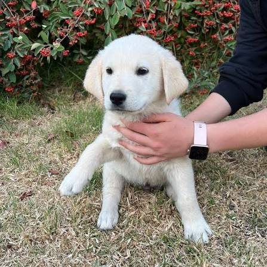
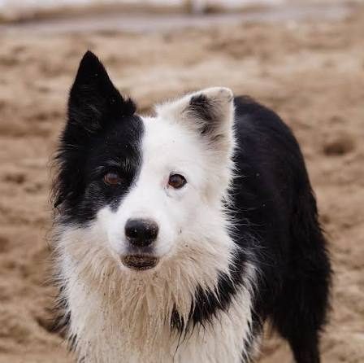
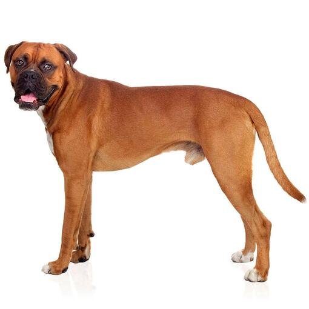

CachorroMax
- Raza: Mestizo Retriever
- Edad: 8 Meses
- Tamaño: Mediano
Es sumamente juguetón, le encanta correr por el césped y convive perfectamente con otros perros y niños pequeños.
Adopta yaTodos nuestros peludos se entregan vacunados, desparasitados y con esterilización garantizada.

CachorroEs sumamente juguetón, le encanta correr por el césped y convive perfectamente con otros perros y niños pequeños.
Adopta ya
JovenLuna es muy inteligente y activa. Necesita una familia que disfrute dar paseos largos y jugar con la pelota.
Adopta ya
AdultoUn caballero de cuatro patas. Tranquilo, obediente, ideal para vivir en casas familiares o departamentos espaciosos.
Adopta ya